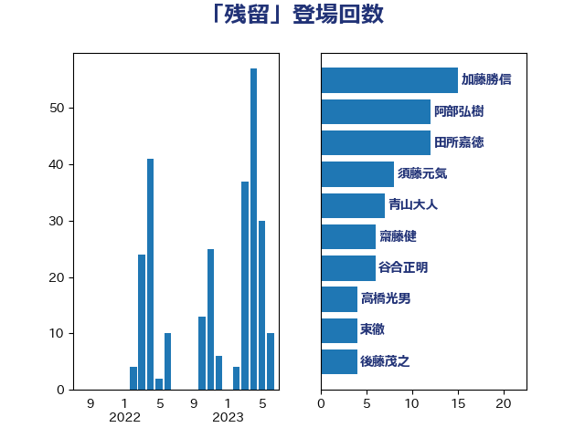

単語「残留」

| 加藤勝信 | 自由民主党 | 15 回 |
| 阿部弘樹 | 日本維新の会 | 12 回 |
| 田所嘉徳 | 自由民主党 | 12 回 |
| 須藤元気 | 無所属 | 8 回 |
| 青山大人 | 立憲民主党 | 7 回 |
| 齋藤健 | 自由民主党 | 6 回 |
| 谷合正明 | 公明党 | 6 回 |
| 高橋光男 | 公明党 | 4 回 |
| 東徹 | 日本維新の会 | 4 回 |
| 後藤茂之 | 自由民主党 | 4 回 |
| 倉林明子 | 日本共産党 | 4 回 |
| 沢田良 | 日本維新の会 | 3 回 |
| 徳永エリ | 立憲民主党 | 3 回 |
| 川田龍平 | 立憲民主党 | 3 回 |
| 中川正春 | 立憲民主党 | 3 回 |
| 上田清司 | 国民民主党 | 3 回 |
| 青木愛 | 立憲民主党 | 2 回 |
| 紙智子 | 日本共産党 | 2 回 |
| 笠井亮 | 日本共産党 | 2 回 |
| 熊田裕通 | 自由民主党 | 2 回 |
| 日下正喜 | 公明党 | 2 回 |
| 山下芳生 | 日本共産党 | 2 回 |
| 宮本徹 | 日本共産党 | 2 回 |
| 古川禎久 | 自由民主党 | 2 回 |
| 伊波洋一 | 無所属 | 2 回 |
| 中条きよし | 日本維新の会 | 2 回 |
| 高橋英明 | 日本維新の会 | 1 回 |
| 高橋千鶴子 | 日本共産党 | 1 回 |
| 青島健太 | 日本維新の会 | 1 回 |
| 鈴木貴子 | 自由民主党 | 1 回 |
| 鈴木庸介 | 立憲民主党 | 1 回 |
| 金村龍那 | 日本維新の会 | 1 回 |
| 金子道仁 | 日本維新の会 | 1 回 |
| 金城泰邦 | 公明党 | 1 回 |
| 舟山康江 | 国民民主党 | 1 回 |
| 羽田次郎 | 立憲民主党 | 1 回 |
| 緑川貴士 | 立憲民主党 | 1 回 |
| 石橋通宏 | 立憲民主党 | 1 回 |
| 浜野喜史 | 国民民主党 | 1 回 |
| 浜田靖一 | 自由民主党 | 1 回 |
| 浅田均 | 日本維新の会 | 1 回 |
| 池畑浩太朗 | 日本維新の会 | 1 回 |
| 池田佳隆 | 自由民主党 | 1 回 |
| 横山信一 | 公明党 | 1 回 |
| 森屋隆 | 立憲民主党 | 1 回 |
| 林芳正 | 自由民主党 | 1 回 |
| 掘井健智 | 日本維新の会 | 1 回 |
| 庄子賢一 | 公明党 | 1 回 |
| 市村浩一郎 | 日本維新の会 | 1 回 |
| 山添拓 | 日本共産党 | 1 回 |
| 小野田紀美 | 自由民主党 | 1 回 |
| 小野泰輔 | 日本維新の会 | 1 回 |
| 寺田静 | 無所属 | 1 回 |
| 寺田稔 | 自由民主党 | 1 回 |
| 宮崎政久 | 自由民主党 | 1 回 |
| 宮崎勝 | 公明党 | 1 回 |
| 大河原まさこ | 立憲民主党 | 1 回 |
| 吉田久美子 | 公明党 | 1 回 |
| 勝俣孝明 | 自由民主党 | 1 回 |
| 加藤明良 | 自由民主党 | 1 回 |
| 伊佐進一 | 公明党 | 1 回 |
| 仁比聡平 | 日本共産党 | 1 回 |
| 井上哲士 | 日本共産党 | 1 回 |